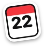

Help
Using lães
How lães works on the Mac and iPhone, what each setting does, and what to try when something doesn't work. On the Mac, the same tips are in the app under Help › lães Help (⌘?).
Getting started
lães is in public beta for Mac and iPhone. Join on TestFlight: open the link on your iPhone or Mac, and Apple's TestFlight app installs lães. It needs macOS 15 or later, or iOS 18 or later. The source is on GitHub under the MIT licence, so you can also build it yourself.
- Sign in with the Microsoft work, school or personal account that holds your calendar. You can pick or add an account each time.
- You need Outlook calendar and Microsoft To Do on that account. Notes also need OneDrive.
- Before you sign in, lães shows sample data, so you can look around first.
- If Microsoft says “Need admin approval”, see Troubleshooting.
Getting around
On the Mac
- The window shows two weeks, Saturday to Friday: the top row is the first week, the bottom row the week after. Each day lists its tasks on top and its meetings below.
- The switch in the toolbar moves between Weeks, Tasks and Notes. ⌘1, ⌘2 and ⌘3 go straight to one; ⌘L goes to the next.
- Today (⌘T) jumps back to the current week. The arrows (⌘← and ⌘→) move one week at a time.
- Click a meeting to see its time, place, category, status and attendees. From there you can join an online meeting, add a note or open the meeting in Outlook. Meetings from Outlook can't be changed in lães.
- An all-day event tints its whole day column, unless it is marked free, cancelled or declined.
On iPhone
- Four tabs: Calendar, Tasks, Notes and Settings.
- The calendar shows three days at a time and snaps day by day, with next week right below. Today brings you back.
- Pull down on any list to refresh.
Keyboard shortcuts on the Mac
| Keys | What they do |
|---|---|
| ⌘1 ⌘2 ⌘3 | Weeks, Tasks or Notes |
| ⌘L | Switch to the next view: Weeks, Tasks, Notes |
| ⌘T | Go to this week |
| ⌘← ⌘→ | Previous or next week |
| ⌘R | Refresh |
| ⇧⌘P | Hide or show private items |
| ⌘, | Settings |
| ⌘? | lães Help |
| The Task menu, for the task open in the Tasks view | |
| ⌘↩ | Mark as completed |
| ⌘1 | Due today |
| ⌘2 | Due tomorrow |
| ⌘3 | Due next week (the coming Monday) |
| ⌘4 | Due next weekend (the coming Saturday) |
| ⌘0 | Remove the due date |
Tasks
Your tasks are your Microsoft To Do lists. Whatever you change in lães changes in To Do, and the other way round.
In the weeks
- Each day lists the tasks due that day, under the day's header. Overdue tasks collect on today, with their original date in red.
- Click a task to open it. That is where you tick it off, rename it, choose its list, due date, reminder and repeat, mark it important, add and tick its steps, and write a note.
- Drag a task onto another day to change its due date.
- On the Mac, drag a task into the hours of a day to block an hour for it in your Outlook calendar. The new meeting is private and in the lães category. Drag its bottom edge to change when it ends, or click it and choose Delete to move it to Deleted Items in Outlook.
- Click empty space under a day to add a task for that day. On a full day, scroll to “Add task” at the end of the list. New tasks go to your default To Do list.
- Completing a repeating task brings up its next occurrence a few seconds later.
- A task note is Markdown. A note with formatting from Outlook can only be edited in Outlook.
- The app icon shows how many tasks are due today or overdue, and on mornings with any, a notification at 9:00 says how many. Both show numbers only, never what the tasks say. Both are on from the start: switch either off, or pick another time, in Settings › Notifications; each device has its own setting.
In the Tasks view
- Planned, Important and All come first, then To Do's own lists, then yours. Planned can show All Planned, Overdue & Today, Overdue, Today, Tomorrow, This Week or Later.
- Sort by due date, list, title or importance.
- New List adds a list. Right-click a list on the Mac, or swipe it on iPhone, to rename or delete it. Deleting a list deletes it and all its tasks from Microsoft To Do; this can't be undone.
- Drag your lists into the order you like. Microsoft To Do can't sync the order of lists, so it is only stored on that device.
Dates and stars as you type
In the add bar of the Tasks view, a day or a star in the title is picked up as you type. lães underlines the words, shows what they mean in a badge above the bar, and leaves them out of the title. “Call mom tomorrow star” becomes “Call mom”, due tomorrow and important.
| Type | And the task is |
|---|---|
| today | due today |
| tomorrow | due tomorrow |
| next week | due the coming Monday |
| next month | due the 1st of next month |
| monday … sunday | due on the next one after today (“friday” on a Friday is next week's) |
| star, priority | marked important |
- A day may have on, by or due in front of it: “on Friday”, “by Friday”, “due Friday”.
- Only whole words count, and only in English: “Mondays” and “today's” stay part of the title.
- Meant it literally? Click or tap the badge to remove it, and the word stays in the title.
- In Planned, a task without a day gets the day the add bar names, such as “Add a task due tomorrow”.
Moving a task to another list
Choose another list in the task's details. Microsoft To Do can't move a task between lists, so lães copies it into the new list with its note, steps, links and attached files, then deletes the original. If any part of the copy fails, the task stays where it was. Moving needs a connection. Tasks made from flagged emails stay in their list.
Notes
- Notes are Markdown files in a OneDrive folder only lães uses. The first line, starting with #, is the title. Microsoft asks you to allow the folder once.
- New Note starts an empty note with the cursor in the title. On the Mac, double-click a note to edit it right where you clicked; ⌘S, Esc or Done stops and saves. While you edit, bold looks bold with its
**still there, dimmed; when you stop, the marks go and to-dos show as boxes. Click or tap a box to tick the to-do without editing. - On the Mac, Return continues a list (an empty item ends it), and
*,_,`and~come in pairs. Select text, or hold ⌘ for a moment, to see the formatting buttons and their shortcuts: ⌘B bold, ⌘I italic, ⌘U underline, ⌘− strikethrough, ⌘L list, ⌘O numbered list, ⌘T to-do list, ⌘K link. A new link starts as[label](url): type the label, press Tab, type the address. - To write a note for a meeting, click the meeting and choose Add Note. Five minutes before it starts, lães reminds you of its notes, unless you switch meeting reminders off in Settings › Notifications.
- Search looks through the full text of every note and forgives typos. The list shows how many of a note’s to-dos are done. Notes written by an AI tool or on another device appear after the next refresh.
- Copy Note copies the whole note as Markdown. Delete removes the file from your OneDrive folder.
- On iPhone, a bar above the keyboard adds headings, text styles, lists and indents. Its link button picks up the address you just copied.
The Markdown lães formats
| Write | For |
|---|---|
# Title, ## Section | Headings |
- item | A bulleted list |
- [ ] to do, - [x] done | A checklist |
**bold**, *italic*, ~~struck~~ | Text styles |
<u>underlined</u> | Underline, which Markdown doesn't have |
[text](https://…) | A link |
Tables, quotes and code blocks are shown as typed.
Private group
The private group is what you'd rather not have on screen, say when you share your screen or show someone your calendar: meetings in the calendar categories and tasks on the lists you pick. Nothing changes in Microsoft 365.
- In Settings › Private Group, switch on the calendar categories and task lists that are private.
- The eye button in the toolbar (⇧⌘P on the Mac) hides or shows all of them at once, for example before sharing your screen.
- Hidden meetings stay on the calendar as plain grey blocks with a crossed-out eye, so you can still see the time is taken. Their title, place and people don't show. Hidden tasks and notes disappear completely.
- What the eye hides is hidden from connected AI tools too, including the notes of private meetings.
Settings
On the Mac, open Settings with ⌘, or the gear in the toolbar. On iPhone and iPad, it is the gear at the top right, next to the eye.
- General
- Your account, to sign in or out (on iPhone, above the other panes). Keep notes in OneDrive: switch this off if your account has no OneDrive or your organisation doesn't allow it; signing in then no longer asks for it. Week starts on (Saturday unless you change it), and the hours the calendar shows, 07:00 to 20:00 unless you change them. On iPhone and iPad, whether the Tasks tab opens with your lists, or with Planned: Overdue & Today; Back then leads to your lists.
- Notifications
- Meeting reminders five minutes before a meeting that has notes, the to-do badge on the app icon, and the morning summary with its time. All are on until you switch them off, on each device. If the system doesn't allow lães notifications yet, the pane says so at the top, with a button to allow them.
- Shared settings
- The private group, the order of your lists, the week's first day and the hours shown are the same on every device signed in to your account. lães keeps them in a read-only note, lães settings, at the end of your notes; the device that changed them last wins. With notes switched off, each device keeps its own.
- Private Group
- The calendar categories and task lists the eye hides. See Private group.
- App Icon
- Arrange the stickers on the app icon. See App icon.
- AI Access Mac
- Lets AI tools on your Mac connect. See Connect an AI tool.
- About & Legal
- The version, what happens to your data, third-party software and trademarks. See Privacy and your data.
App icon
The icon is made of stickers, and you can arrange them in Settings › App Icon.
- Yellow tilde
- White tilde
 Name
Name
Calendar page Tick
Tick Notepad
Notepad
- Drag a sticker onto the icon and it snaps into the nearer of its two corners. Drag it off to take it away. Tapping a sticker below the icon also puts it on or takes it off.
- The tildes and the name go on one diagonal, top left and bottom right. The calendar page, tick and notepad go on the other, top right and bottom left.
- Each corner takes one sticker or stays empty, each sticker goes on once, and only one of the two tildes at a time.
- Save makes it your icon; Reset goes back to the standard one.
- On the Mac, your icon shows in the Dock while lães runs. Finder and Launchpad keep the standard one, because macOS only lets a running app change its icon.
- On iPhone, iOS confirms the change with an alert of its own.
Connect an AI tool Mac
lães can run an MCP server so an AI assistant on your Mac, such as Claude Code, can read your calendar, tasks and notes, add and change tasks and notes, and block time. It is off until you turn it on.
- Open Settings › AI Access and click Turn On and Copy Setup Prompt.
- Paste the prompt into your AI tool. It adds the server to its own configuration and checks that it works.
To set it up by hand, the Connect section shows the address and has buttons to copy the Claude Code command or the access token. For Claude Code, paste the command into a terminal. It looks like this, with your own token:
claude mcp add --transport http laes \
http://127.0.0.1:52637/mcp \
--header "Authorization: Bearer YOUR-TOKEN"- Other tools need the address and the token as an “Authorization: Bearer” header. Treat the token like a password. It is kept in your Mac's Keychain.
- The server only runs while lães is open, and only this Mac can reach it.
- The port is 52637 unless you change it. Random picks another if that one is taken; Default goes back. After changing the port, connect your tools again: the address they saved no longer works.
- Items hidden with the eye button are hidden from the AI tool too, including the notes of private meetings.
- The tools it offers: list_events, get_event, create_event, list_task_lists, list_tasks, get_task, create_task, update_task, list_notes, search_notes, get_note, create_note, update_note and sync.
- For example, ask it to prepare you for a meeting: it finds the meeting by words from its title, place or people, writes a note linked to it, and five minutes before the meeting lães shows you that note.
Sync and offline
- On the Mac, lães refreshes every five minutes and when you press Refresh (⌘R). Hover over Refresh to see when it last synced.
- On iPhone, lães syncs when you open it and when you pull down a list. In between, iOS wakes it in the background a few times a day to send waiting changes and update the saved copy; iOS decides when.
- Without a connection you see the last synced data, and the toolbar says Offline.
- Task changes made offline are saved on the device and sent, in order, when the connection returns. The toolbar shows how many are waiting.
- Some changes go straight to Microsoft and need a connection: blocking time, and changing or deleting a meeting made in lães; moving a task to another list; and adding, renaming or deleting lists.
Troubleshooting
Microsoft says “Need admin approval” when I sign in
Your organisation requires its IT team to approve lães once. Send them the message shown on that screen. lães asks for these permissions:
User.Read, to sign you inCalendars.ReadWrite, for your calendar and the time you blockTasks.ReadWrite, for Microsoft To DoMailboxSettings.Read, for the colours of your Outlook categoriesFiles.ReadWrite.AppFolder, for the notes, only in a OneDrive folder of lães' ownoffline_access, to stay signed in
I can't see my notes
Notes may be switched off. Turn on Keep notes in OneDrive in Settings › General, or click Turn On Notes in the Notes view. Microsoft then asks you to allow the folder. If your account has no OneDrive, or your organisation doesn't allow it, notes stay off.
A note written by an AI tool or on another device appears after the next refresh.
My AI tool can't connect
- lães has to be open on the Mac, with Let AI tools on this Mac connect switched on in Settings › AI Access.
- If AI Access shows an error, another app may be using the port. Click Random, then connect your tool again, since its saved address has changed.
- Copy the setup prompt or the command again, so the address and token are current.
Something I changed isn't in Outlook or To Do yet
If the toolbar says Offline, your task changes are waiting and go out, in order, when the connection returns. Otherwise press Refresh (⌘R), or pull down on iPhone. Moving a task between lists and changes to lists and blocked time need a connection; if one fails, lães says so in a bar at the top.
My lists are in a different order on my other device
Microsoft To Do can't sync the order of lists, so each device keeps its own.
My custom icon isn't in Finder or Launchpad
macOS only lets a running app change its icon, so your design shows in the Dock while lães runs, and Finder and Launchpad keep the standard icon.
Privacy and your data
lães talks only to Microsoft, using your own sign-in. Notes, if you turn them on, are files in your own OneDrive. Your calendar, tasks and notes are kept on this device for offline use, and the sign-in is stored in your Keychain. They go nowhere else, and signing out removes the local copy.
lães sends crash reports and anonymous usage counts, such as how often a task is added, to its developer's own server. They hold nothing from your calendar, tasks or notes, and they aren't linked to you or your Microsoft account. It is built with Apple's system frameworks and three open-source libraries for those reports: BoringKit, KSCrash and the Aptabase Swift client. Icons are Apple's SF Symbols. This website has no cookies, trackers or analytics. The full privacy policy has the details.
lães is an independent app and is not affiliated with or endorsed by Microsoft. Microsoft 365, Outlook and Microsoft To Do are trademarks of the Microsoft group of companies.
Getting help
- Found a bug, or have an idea? Open an issue on GitHub. Say which device you use, the version from Settings › About & Legal, and what you expected to happen.
- Found a security problem? Please don't open a public issue. Follow the security policy instead.
- Anything else? Write to inbox at laesapp.com.